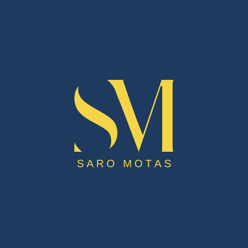

Saromotas Engineering Consulting Ltd.
Digital engineering projects exploring BIM, AI, sustainability, automation, digital twins, water systems, and resilient infrastructure workflows across the built environment.
BIM-based Revit safety analysis prototype supporting Prevention through Design through rule-based and uncertainty-aware hazard identification workflows.
Digital twin exploration focused on BIM operational workflows, lifecycle intelligence, and building data environments.
Experimental AI-assisted BIM workflows exploring automation, coordination, and digital engineering support systems.
Sustainability-focused analytics concepts exploring environmental visibility, reporting, and performance workflows.
Engineering analytics exploring water systems, resilient infrastructure, and environmental planning workflows.
Ongoing exploration into BIM, AI, sustainability, digital twins, and next-generation digital engineering systems.
Featured Project
BIM-based safety analysis prototype for Autodesk Revit supporting Prevention through Design (PtD) through rule-based and uncertainty-aware hazard identification workflows.
This portfolio is developed under the Saromotas brand to showcase applied BIM, AI, sustainability, and digital engineering projects.
The work reflects a growing project ecosystem focused on resilient infrastructure, smart design, digital twins, BIM-enabled automation, and practical engineering innovation.